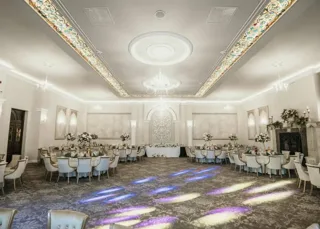
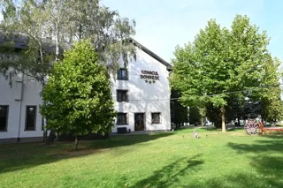
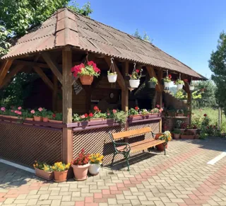
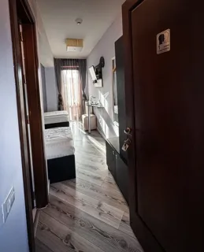
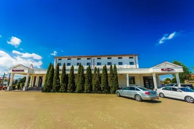
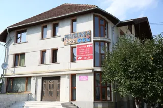

Locații de nuntă în Șcheia
- locații în director
- 6
- cu cazare în registrul SITUR
- 3
- medie ponderată Google
- 4,3 / 5
- evaluări Google
- 6.301
Cum alegi o locație în Șcheia
În Șcheia poți începe comparația cu Curtea Bizantină (han), Conacul Domnesc (hotel), Confort (hotel). Aceste proprietăți apar în primele poziții când luăm în calcul împreună nota și numărul de evaluări Google. Salvează adresele care vă interesează pentru a le așeza apoi alături în fișa de comparare a ofertelor.
În fișele proprietăților poți compara dotări concrete la Curtea Bizantină (cazare, parcare gratuită, restaurant), Conacul Domnesc (grădină, terasă, cazare). Pentru oferta de nuntă, întreabă ce spații și servicii dintre cele prezentate intră în rezervarea privată pentru data voastră.
Dacă vin rude de departe, Curtea Bizantină are o unitate de cazare asociată în registrul SITUR. Înregistrarea pentru Curtea Bizantină cuprinde 8 locuri de dormit în 4 spații de cazare. Întreabă câte camere pot fi păstrate pentru aceeași noapte înainte să trimiți invitaților detaliile de rezervare.
Dacă vrei să vezi două proprietăți în aceeași zi, poți continua de la Conacul Domnesc spre Provence din Suceava. Punctele lor sunt la 1,5 km în linie dreaptă. Deschide traseul înainte să fixezi ora celei de-a doua vizite, mai ales dacă grupul se deplasează cu autocarul.
Locații pentru vizionare
Ordinea ține cont de nota Google și de numărul evaluărilor. Cum calculăm ordinea

Fotografie a locației · Sursa fotografiei Șcheia · Han
Curtea Bizantină
Han cu restaurant și două terase la Șcheia, lângă Suceava; un eveniment de familie lăudat, dar și recenzii despre frig și zgomot.
Strada Petru I Mușat, 727525 Șcheia+40 747 821 929
Fotografie a locației · Sursa fotografiei Șcheia · Hotel
Conacul Domnesc
Resort cu grădină de 10 ha, spa și saloane de la 100 la peste 500 de locuri la Șcheia, Suceava. Ce laudă invitații la nunți și ce critică.
Strada Agronomului 445, 727525 Șcheia+40 372 300 600
Fotografie a locației · Sursa fotografiei Șcheia · Hotel
Confort
Hotel în Șcheia, Suceava, cu foișor și grătar, dar profil Google contrazis de oaspeți despre restaurant și piscină. Ce să confirmi în scris.
Str. Humorului 54, 727525 Șcheia+40 748 204 848
Fotografie a locației · Sursa fotografiei Șcheia · Local pentru evenimente
Vama Veche
La Vama Veche din Șcheia, un majorat oferă un reper mai precis decât denumirea ansamblului, fiindcă organizatorul a folosit foișorul Haza.
Strada Aleea Vămii 7, 727525 Șcheia+40 721 526 939
Fotografie a locației · Sursa fotografiei Șcheia · Hotel
Polaris
Recepția deschisă și pentru sosirile târzii a contat pentru un călător la Polaris, care recomandă locul celor ce ajung în zona Sucevei după un zbor de seară.
Strada Mihoveni 1, 727525 Șcheia+40 330 104 903
Fotografie a locației · Sursa fotografiei Șcheia · Pensiune
Pensiunea ODN Suceava
Pensiunea ODN Suceava, Șcheia. La ODN în Șcheia, traseul de sosire descris de un oaspete trece prin spatele pensiunii.
Str. Humorului, 727525 Șcheia+40 748 168 860
Întrebări despre locațiile din Șcheia
Unde pot dormi invitații în Șcheia?
În registrul de cazare SITUR găsim Curtea Bizantină (8 locuri de cazare), Conacul Domnesc (78 de locuri de cazare), Confort (35 de locuri de cazare). Verifică ce camere sunt libere pentru noaptea evenimentului.
Ce proprietăți din Șcheia au grădină sau terasă?
Conacul Domnesc (grădină, terasă); Confort (terasă, foișor); Vama Veche (grădină). Cere administratorului condițiile de folosire pentru o petrecere privată.
Care locație din Șcheia are cele mai multe evaluări Google?
Conacul Domnesc are 2.256 de evaluări în profilul Google folosit la documentare. Evaluările acoperă și alte experiențe la proprietate, inclusiv vizitele fără eveniment.
Unde apare o intrare accesibilă în Șcheia?
Profilurile Google indică o intrare accesibilă la Vama Veche. Pentru o cununie în exterior, cere detalii despre traseul dintre intrare și zona cu scaune.
Ce alte localități pot include într-o vizionare lângă Șcheia?
Cele mai apropiate adrese comparate pe hartă sunt în Suceava, Sfântu Ilie, Lisaura. Găsești mai jos distanțele dintre proprietățile folosite pentru această comparație.
Vizionări în apropiere
- Suceava · 10 locații. Între Conacul Domnesc și Provence sunt 1,5 km în linie dreaptă.
- Sfântu Ilie · 1 locație. Între Confort și Bucovina Easy Stay sunt 2,3 km în linie dreaptă.
- Lisaura · 1 locație. Între Polaris și Agropensiunea Ioana sunt 5,2 km în linie dreaptă.
Alte adrese din aceeași unitate administrativă
Bucovina Easy Stay (Sfântu Ilie).